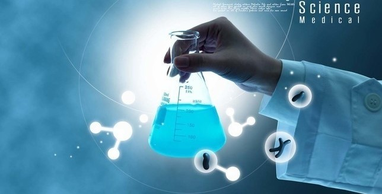
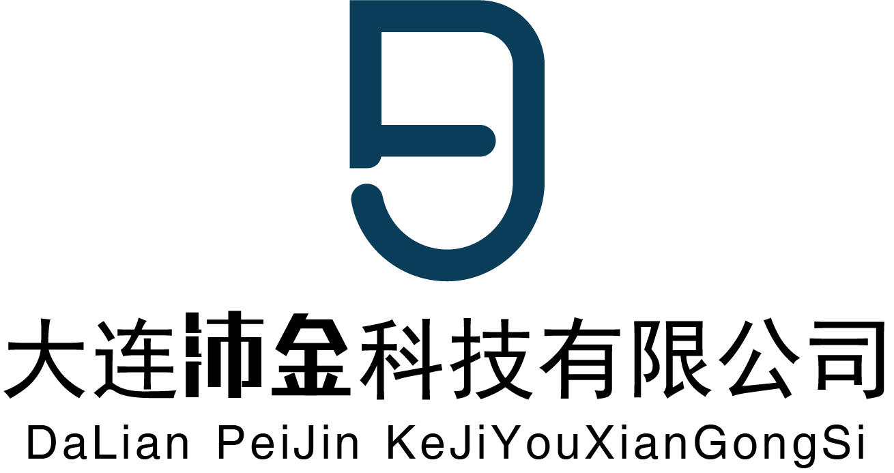
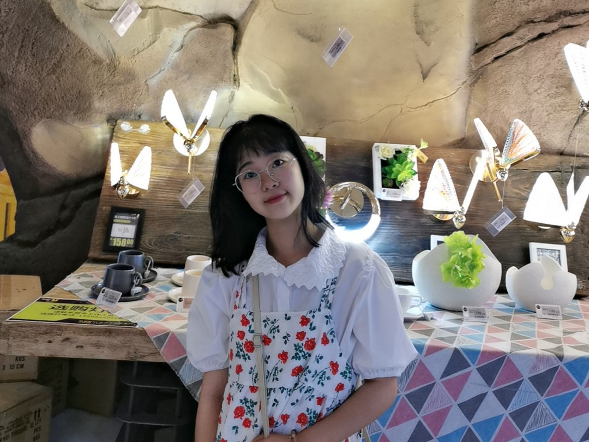
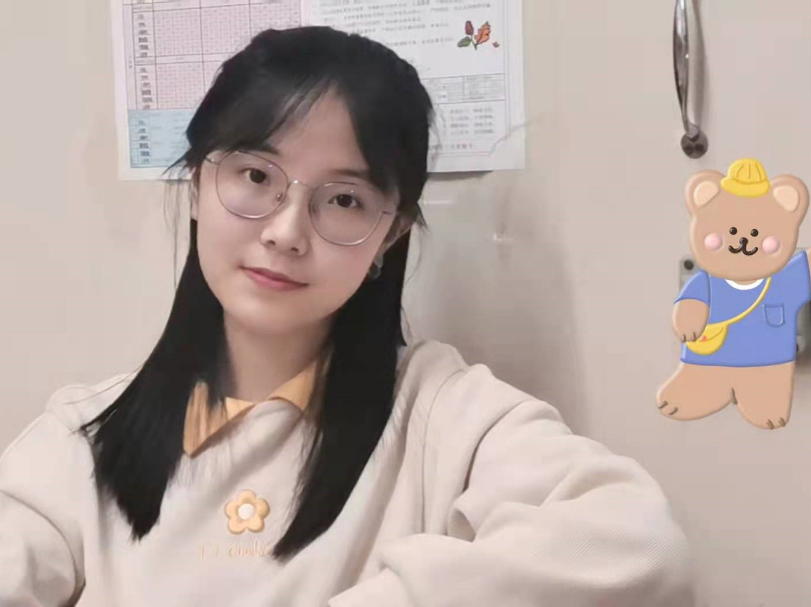

大连沛金科技有限公司是一家化学化工企业，以东北地区为主要销售市场，以技术开发为导向，主要致力于以FL-1多酸缓蚀剂为主打产品的环保型缓蚀剂的研发、生产和销售。本公司以国内危险废物处理行业为服务市场，充分利用高校研发力量，推进高新技术成果的产业化。
公司成立初期主要生产FL-1工业清洗缓蚀剂，可清洗碳钢、低合金钢、不锈钢、紫铜、黄铜、铝、镀锌设备等金属及不同材质组合设备表面的硝酸盐、硅酸盐、金属氧化物及混合型积垢的化学清洗过程中金属表面缓蚀，主要针对需要工业清洗的企业或危废处理行业，解决过去同类产品性价比过低、产品功能单一、性能不稳定和环境效益不佳的问题，满足工业清洗向大型化、系列化、专用化和高档化方向发展的需求，在提升经济效益的同时，从真正意义上实现循环经济。
公司将以此为基础，力图建立一个包括缓蚀剂的研发、生产和销售的专业化公司，未来发展将进一步追求产品的高效、无毒、绿色、环保、经济，利用科技抑制甚至阻止工业设备环境对金属材料的侵蚀，从而减少金属设备腐蚀而造成的资源浪费和经济损失。同时，公司会在原有的技术基础上扩展新的技术领域，逐步实现产品技术的多元化，进而将产品投入到更为精细的化工领域。
【副总经理兼技术总监——谢炎轩】大连沛金科技有限公司的副总经理，主要负责制定、监督并检查研发部、生产部和销售部的日常工作计划及任务完成情况。同时，作为公司的技术总监，具有良好的技术知识储备，负责搜集市场信息，了解本行业产品更新换代和技术进步情况，推动新产品研制开发。
【副总经理兼财务总监——王瑞琪】大连沛金科技有限公司副总经理，负责制定、监督并检查企划部、运营部和公关部工作计划及任务完成情况,负责依法建账、制证、记账,及时反映公司财务状况，按照企业财务制度、公司章程和财务管理制度规定进行审查、列支费用、成本核算、财务分析、资金调度及现金管理等工作。
【营销部部长——吴美萱】作为大连沛金科技有限公司的营销部部长，负责市场分析,针对目标市场的竞争产品进行分析和调研；深度明晰市场发展态势和走向,制定和持续优化总体市场营销策略；建立并管理市场拓展团队,对团队成员的业务能力、素养等进行培训,不断提高团队力量及人员的后备培养。

【生产部部长——台合语】作为大连沛金科技有限公司的生产部部长，负责根据营销需求，组织、制定生产计划；合理安排生产过程，协调处理生产中的问题；定期检查车间安全、环保、卫生、工艺流程等情况，排除问题隐患；对生产管理及相关管理工作进行相应的组织实施、协调、监督和考核。

【运营部部长——马家璇】作为大连沛金科技有限公司的运营部部长，负责公司线上平台规划、扩展、运营和管理，与关键电商平台建立强有力的战略合作关系；规范客户信息化建设及信息系统的日常运作管理工作；培养并组建高水平的运营团队，对部门员工进行岗位培训，提高专业技能。
【企划部部长——水敬皓】作为大连沛金科技有限公司的企划部部长，负责公司信息化平台的选择、实施和推广工作；设计公司形象标志，制定品牌发展规划；发布公司户外和媒体广告，树立良好的企业形象。